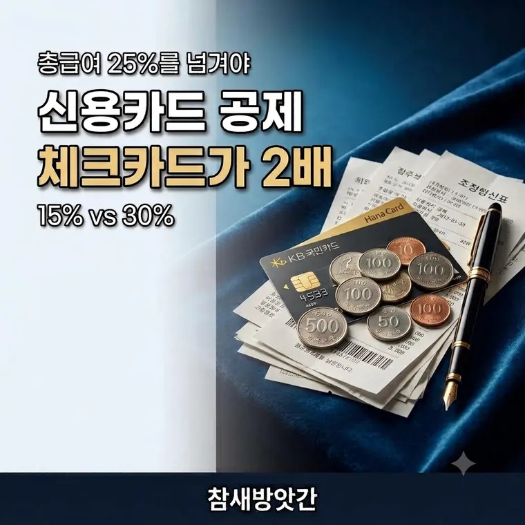

연말정산 공제 절세 전략: 신용카드 25% 법칙부터 놓치기 쉬운 부양가족 조건까지
카드를 많이 쓴다고 공제가 늘어나지 않습니다. 총급여의 25%를 넘긴 다음부터 세어주기 때문입니다. 넘기기 전과 넘긴 뒤에 써야 할 카드도 다릅니다.

25%를 넘긴 금액부터 셉니다
신용카드 소득공제는 쓴 돈 전부를 봐주지 않습니다. 총급여의 25%를 초과한 금액만 대상입니다.
총급여가 4,000만원이면 1,000만원까지는 아무리 써도 공제가 0원입니다. 1,000만원을 넘긴 순간부터 세어줍니다.
문턱 = 4,000만 × 25% = 1,000만원
공제 대상 = 1,600만 − 1,000만 = 600만원
무엇으로 결제했느냐로 두 배가 갈립니다
| 결제 수단 | 공제율 |
|---|---|
| 신용카드 | 15% |
| 체크카드 | 30% |
| 현금영수증 | 30% |
같은 600만원이라도 신용카드면 90만원, 체크카드면 180만원이 공제 대상 소득에서 빠집니다.
문턱(총급여 25%)을 채울 때까지 → 신용카드 (혜택이 많으니까)
문턱을 넘긴 뒤부터 → 체크카드·현금영수증 (공제율이 두 배니까)
문턱을 채우는 구간은 어차피 공제가 안 되니 카드 혜택이 좋은 쪽을 쓰는 게 이득입니다. 넘긴 뒤에는 공제율이 높은 쪽으로 갈아타면 됩니다.
연말에 홈택스에서 지금까지 쓴 금액을 확인해 보고, 문턱을 넘었는지 보고 남은 기간 결제 수단을 정하면 됩니다.
의료비는 3%만 넘으면 됩니다
의료비 세액공제는 문턱이 훨씬 낮습니다. 총급여의 3%를 넘는 금액부터 15%를 세금에서 직접 깎아줍니다.
총급여 4,000만원이면 120만원을 넘긴 금액부터입니다.
특징이 하나 있습니다. 부양가족의 의료비는 나이나 소득 제한 없이 합산할 수 있습니다. 함께 사는 가족 병원비를 한 사람 앞으로 모으면 문턱을 쉽게 넘습니다.
월세는 무주택이면 챙기세요
총급여 8,000만원 이하 무주택 세대주가 대상입니다. 연 1,000만원 한도로 낸 월세의 일정 비율을 세금에서 빼줍니다.
| 총급여 | 공제율 |
|---|---|
| 5,500만원 이하 | 17% |
| 5,500만원 초과 ~ 8,000만원 이하 | 15% |
월세 60만원씩 1년이면 720만원인데, 총급여 5,000만원이라면 122만 4천원을 세금에서 깎습니다.
다만 임대차계약서 주소와 주민등록등본 주소가 같아야 합니다. 전입신고를 안 해뒀다면 공제가 안 됩니다.
자동으로 안 뜨는 것들
홈택스 간소화 서비스에 나오지 않아 그냥 넘어가는 항목이 있습니다. 영수증을 직접 받아야 합니다.
| 항목 | 한도 |
|---|---|
| 안경·콘택트렌즈 | 1인당 연 50만원 |
| 산후조리원 | 출산 1회당 200만원 |
시력 교정용이어야 하고, 안경점에서 영수증을 따로 받아 제출해야 합니다.
따로 사는 부모님도 됩니다
같이 살지 않아도 만 60세 이상이고 연간 소득금액 100만원 이하면 부양가족 기본공제를 받을 수 있습니다. 근로소득만 있다면 총급여 500만원 이하입니다.
부모님이 쓴 카드 금액도 합산해서 공제받을 수 있습니다.
한 부모님을 두 자녀가 동시에 공제받을 수는 없습니다. 중복으로 신청하면 나중에 가산세와 함께 추징됩니다. 누가 받을지 미리 정해두는 편이 좋습니다.
놓쳤어도 되돌릴 수 있습니다
연말정산 때 빠뜨린 공제가 있다면 경정청구로 돌려받을 수 있습니다. 지난 5년치까지 가능합니다.
월세 공제를 몰라서 못 받았다면 지금이라도 신청할 수 있다는 뜻입니다.
자주 묻는 질문
총급여의 25%를 초과해 사용한 금액부터입니다. 총급여 4,000만원이면 1,000만원까지는 공제가 없고, 그 이상 쓴 금액만 대상이 됩니다.
총급여 25% 문턱을 채울 때까지는 카드 혜택이 좋은 신용카드가 유리합니다. 문턱을 넘긴 뒤에는 공제율이 15%에서 30%로 두 배인 체크카드나 현금영수증을 쓰는 것이 좋습니다.
총급여 8,000만원 이하 무주택 세대주가 대상이며 연 1,000만원 한도입니다. 총급여 5,500만원 이하는 17%, 초과 시 15%를 적용합니다. 임대차계약서 주소와 주민등록등본 주소가 일치해야 합니다.
경정청구 제도를 통해 지난 5년 이내 지출분에 대해 소급 신청할 수 있습니다. 월세나 의료비처럼 몰라서 빠뜨린 항목도 나중에 돌려받을 수 있습니다.